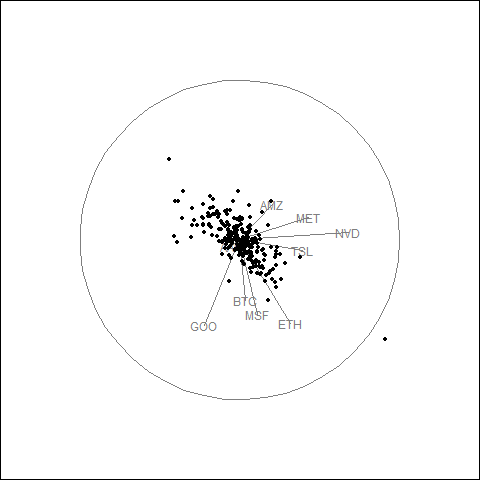
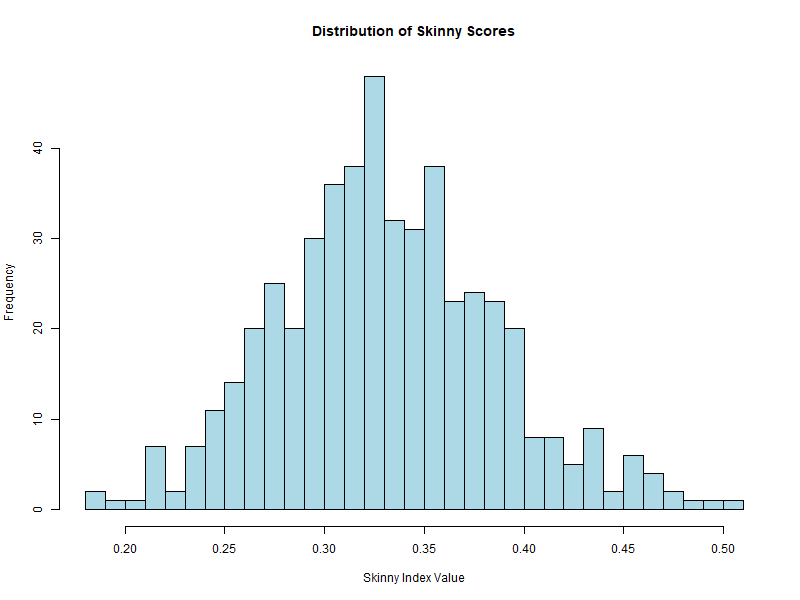

Hard: Financial Analysis Pipeline
This test evaluated the ability to design, implement, and execute a complete end-to-end data analysis pipeline combining data acquisition, feature engineering, statistical analysis, visualization, and interpretation. The task involved building a real-world application using the skinny projection pursuit index on financial data.
Overview
This test involved designing and implementing a complete data analysis pipeline: acquiring financial data, computing features, applying directed tours with the skinny PP index, and generating visualizations.
The pipeline demonstrates integration of multiple R packages, handling real-world data, and applying projection pursuit to financial pattern discovery.
Approach
The pipeline follows five steps:
- Data acquisition: Retrieve historical price data using yahoofinancer
- Feature engineering: Compute returns, volatility, correlations
- Exploratory analysis: Run guided tours with skinny index as optimization criterion
- Comparative analysis: Compare results across different PP indices
- Visualization: Generate plots and animated tours documenting findings
Implementation
Code snippet — Full pipeline code available in Gist
symbols <- c(
"BTC-USD", "ETH-USD",
"AAPL", "MSFT", "NVDA",
"TSLA", "AMZN", "GOOG", "META"
)
# Download prices and compute log returns
getSymbols(symbols, src = "yahoo", from = "2025-01-01", to = "2025-12-31")
price_matrix <- as.matrix(data[, -1])
returns <- diff(log(price_matrix))
X <- scale(returns)
# Define Skinny Index
skinny <- function() {
function(mat) {
cassowaryr::sc_skinny(mat[,1], mat[,2])
}
}
# Render animated guided tour
render_gif(
X,
guided_tour(skinny()),
display_xy(),
gif_file = "finance_skinny_tour.gif",
apf = 1/30,
frames = 50
)
dev.off()Results
Animated Tour Visualization
The guided tour generates a GIF showing how the projection evolves as the optimization searches for elongated point patterns.

Additional Highlight: Score Distribution Visualization
An enhancement to the pipeline is generating a histogram of skinny scores across 500 random projections. This provides insight into the distribution of PP index values and helps identify outliers.
# Search for best projection across 500 random basis
n_search <- 500
proj_list <- replicate(
n_search,
basis_random(ncol(X), 2),
simplify = FALSE
)
scores <- sapply(proj_list, function(p) {
proj <- X %*% p
cassowaryr::sc_skinny(proj[,1], proj[,2])
})
# Visualize skinny score distribution
png("skinny_score_distribution.png", width = 800, height = 600)
hist(
scores,
breaks = 30,
col = "lightblue",
main = "Distribution of Skinny Scores",
xlab = "Skinny Index Value"
)
Among 500 random projections, the skinny index produces a distribution of scores. The histogram shows the frequency of different index values.

Key Findings
- Tech stock cluster: AAPL, MSFT, NVDA, META, and GOOG show correlated movement with similar arrow directions.
- Crypto separation: BTC and ETH behave differently from equities, indicating distinct return dynamics.
- Volatility patterns: TSLA exhibits higher volatility, causing separation from other tech stocks in projection space.
- Daily returns structure: Most observations cluster near the center with occasional large movements at the periphery.
Interpretation
The skinny index successfully identified projections revealing latent structure in the financial returns. The elongated point patterns highlight correlations among technology stocks and the distinct behavior of cryptocurrencies relative to traditional equities.